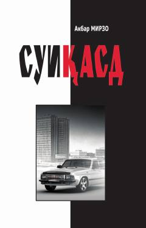

SMustaqillik yillaridagi siyosiy kurashlar va davlat xavfsizligi haqidagi detektiv roman.
Mazkur roman O'zbekiston mustaqilligining dastlabki yillarida yuz bergan murakkab siyosiy jarayonlar va ekstremistik guruhlarning davlat tuzumiga qarshi qaratilgan xurujlari haqida hikoya qiladi. Asar detektiv janrida yozilgan bo'lib, Birinchi Prezident hayotiga qilingan suiqasd urinishlari va yurt tinchligini saqlash yo'lidagi kurashlarni yoritib beradi.